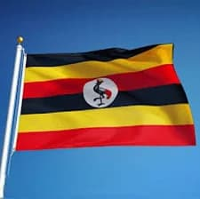

NANSUKUSA KETRINE
About Me
My name is Nansukusa Ketrine. Am born from a family of six children and am the fourth child. I have one living parent and thats my mother, our father died 20 years ago. I completed my first level of education with a college certificate in automotive engineering. Financially my family is what you would call are middle class family. I have and still working as an automotive engineer repairing heavy duty trucks specialized in mercedes benz trucks. I have been working as a freelancer engineer for three years now. My goal is to be an automotive design engineer, specifically designing and building trucks. Am doing this course "software engineering" as an added knowledge as am looking for money to do the main course i want. One thing i have come to realize is that the journey might be long but Jesus is with me as he says in mathew 1:23. So my eyes are on the prize of the achievement.
UGANDA

My country was named the pearl of Africa due to its beautiful sceneries and vast in riches. However ugly hearted our leaders can be some times the people in country are loving and welcoming. So am really proud to be part of this beautiful nation.